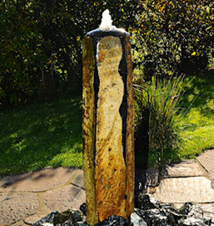
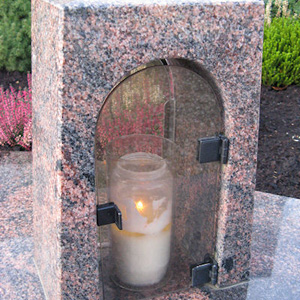
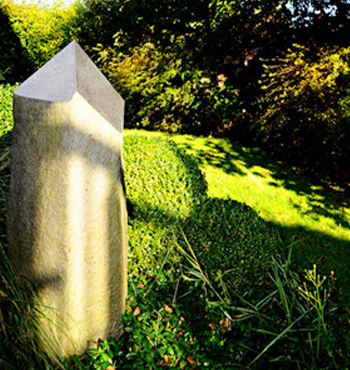
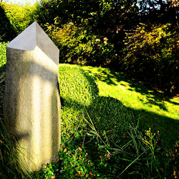

Steinmetzwerkstatt Harich
Steinobjekte für Garten, Haus und besondere Orte
Naturstein kann Räume prägen: als Brunnen, Schale, Skulptur, Stele oder kleines Objekt mit bleibendem Charakter.
LebensArt in Stein
Unikate aus Naturstein
Für Außenbereiche, Gärten, Hauseingänge und besondere Orte entstehen in der Werkstatt handgefertigte Steinobjekte nach Maß.



Accessoires
Kleine Steinobjekte, besondere Geschenke und Details mit bleibendem Charakter.
Mehr erfahrenBeratung von der Idee bis zur Aufstellung
Wir klären mit Ihnen Ort, Wirkung, Material, Maß und technische Anforderungen. Auf Wunsch begleiten wir die Gestaltung von den ersten Skizzen bis zur Aufstellung vor Ort.
Kontakt
Steinobjekt anfragen
Ob erster Gedanke, konkrete Frage oder Wunsch nach einem individuellen Entwurf: Sie erreichen die Steinmetzwerkstatt Harich telefonisch, per E-Mail oder über das kurze Formular.